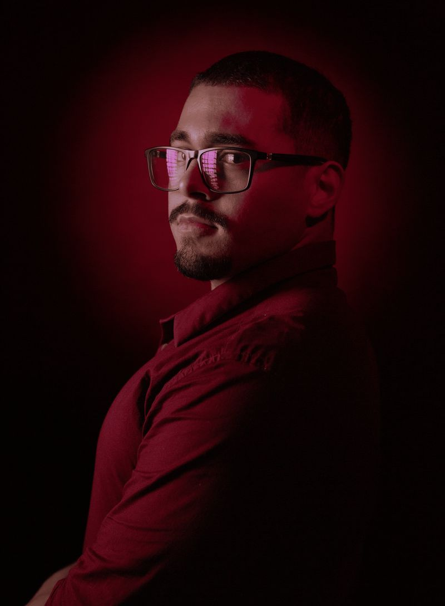
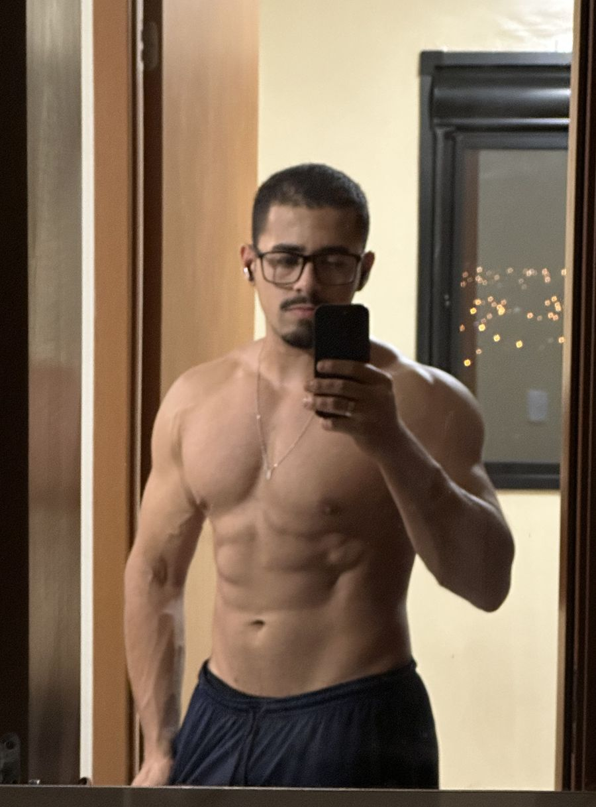

O peso
travou.
E o ânimo foi junto.
Usa caneta, a balança parou e você se sente sem energia, indisposto e flácido? A caneta tira a fome, mas não te diz o que comer. No acompanhamento, o próprio Kevin faz o direcionamento para você destravar o emagrecimento com disposição e preservando músculo.
- 1:1
- direcionamento feito pelo Kevin
- Músculo
- foco em preservar massa magra
- Online
- Brasil e exterior · presencial em Rio Preto


Se uma dessas frases é sua,
a gente precisa conversar.
A caneta resolveu a fome. Mas trouxe problemas que ninguém te contou, e a solução está no que você come.
- 01
“Minha perda de peso travou.”
Com a fome lá embaixo, você come pouco e mal, e o corpo entra em economia. O Kevin ajusta o que e quanto você come para destravar o processo.
- 02
“Vivo cansado, sem ânimo pra nada.”
Comer pouco não é comer bem. Faltam proteína, energia e micronutrientes, e você sente isso no trabalho, no treino e no humor.
- 03
“Emagreci, mas fiquei flácido.”
Sem estratégia, parte do peso que vai embora é músculo. O foco aqui é perder gordura preservando massa magra e firmeza.
- 04
“Tenho medo de parar e engordar tudo de novo.”
A caneta é uma fase. Os hábitos que você constrói no acompanhamento são o que segura o resultado depois dela.
Só a caneta x caneta com direção
A caneta é uma ferramenta. Sem alimentação estratégica, ela costuma vir acompanhada de cansaço, flacidez e efeito sanfona.
| Critério | Só a caneta | Com o Método Atlas |
|---|---|---|
| Fome | Some, e você passa o dia quase sem comer | Você come pouco, mas o que o corpo precisa |
| Músculo | Vai embora junto com a gordura | Estratégia de proteína para preservar massa magra |
| Energia | Cansaço e desânimo no dia a dia | Refeições pensadas para dar disposição |
| Quando o peso trava | Você fica sem saber o que fazer | O Kevin revisa a estratégia com você |
| Depois de parar a caneta | Risco alto de recuperar o peso | Hábitos construídos para manter o resultado |
A caneta ajuda.
Quem direciona é o Kevin.
A caneta reduz a fome, mas não decide o que você come. Sem direção, você come pouco e mal, trava, perde músculo e fica sem energia. O Kevin entende o seu caso, define a estratégia e corrige a rota com você ao longo do acompanhamento.
- Direcionamento feito pelo KevinÉ ele quem avalia o seu caso e define a estratégia. Nada de cardápio genérico ou atendimento terceirizado.
- Estratégia para quem usa canetaRefeições pensadas para quando a fome some: proteína, hidratação e fibras na medida para ter energia e o intestino funcionando.
- Foco em preservar músculoEmagrecer perdendo gordura, não massa magra. É o que ajuda a evitar o corpo flácido e a sensação de fraqueza.
- Avaliação completaRotina, histórico, treino, exames, uso de medicamentos e o que já deu errado antes.
- Ajustes de rota contínuosQuando o peso trava, a energia cai ou a rotina muda, o Kevin revisa e redireciona.
- WhatsApp direto com o KevinDúvida no mercado, no restaurante, na viagem: ele te orienta. Não é robô nem assistente.
- Preparo para a vida sem canetaHábitos construídos no acompanhamento para você manter o resultado quando parar o remédio.
- Online ou presencialDe qualquer lugar do Brasil ou no consultório em São José do Rio Preto.
O Kevin não prescreve nem indica medicamentos. O uso da caneta é definido com o seu médico; o acompanhamento cuida da sua alimentação durante e depois do tratamento.
Do primeiro “oi”
ao plano na mão.
Sem fila de espera e sem formulário de 40 perguntas. Desde o primeiro contato, você fala com quem vai cuidar do seu caso.
Você envia seus dados
Nome, contato e objetivo. Leva dois minutos e não tem compromisso.
2 minutosO Kevin te direciona
Ele te chama no WhatsApp, entende seu momento e explica formato e valores.
WhatsAppAvaliação e estratégia
Consulta online ou presencial. O Kevin define a direção e monta o plano a partir dela.
InícioAjustes de rota contínuos
Revisões ao longo do acompanhamento e WhatsApp direto para não sair do trilho.
Contínuo

Eu sei como é
começar do zero.
Antes de ser nutricionista, eu era o menino magro na frente do espelho, treinando muito e sem entender por que o corpo não mudava. Foi a nutrição, aplicada com método, que virou o jogo.
Hoje sou nutricionista clínico e esportivo, formado pela UNIRP, e sigo em preparação para o fisiculturismo. No acompanhamento, quem te direciona sou eu, do primeiro contato ao último ajuste, com o que testo e estudo na prática: estratégia antes de restrição.
- Nutricionista · CRN 83678
- Graduado pela UNIRP
- Nutrição clínica e esportiva
- Atleta em preparação



O método em
cinco verbos.
Atlas é o nome da forma como o Kevin trabalha: primeiro a direção, depois o plano. E a direção é revista com você ao longo de todo o acompanhamento.
- 01
Avaliar
Entender rotina, histórico, exames, medicamentos e objetivo antes de prescrever qualquer coisa.
- 02
Direcionar
Definir a estratégia para o seu objetivo e traduzir em um plano com comida que você come de verdade.
- 03
Acompanhar
Ver como o corpo, a energia e a rotina respondem na prática, semana a semana.
- 04
Ajustar
Mexer em calorias, proteína e refeições quando o peso trava, o ânimo cai ou a vida muda.
- 05
Evoluir
Chegar ao resultado e, principalmente, saber se virar sozinho, com ou sem caneta.
Não sou eu quem diz.
Mensagens reais enviadas por pacientes durante o acompanhamento. Sem roteiro e sem edição.
O que me ajuda é o fato de você ajustar de acordo com a minha necessidade. Obrigado por acreditar em mim até quando eu mesmo duvido.
“Fiz exatamente o que me orientou. Já estou descostumando comer por compulsão. Acabou a fome e a vontade. O segredo é comer devagar e seguir o plano.”
Welington MoraesControle e mudança de hábitos“Curti demais, irmão. Muito profissional e sem rodeios. Entendeu demais meu real objetivo. 100% animado com o progresso até aqui e com o plano daqui pra frente.”
AfonsoPerformance e objetivo esportivo“A consulta está sendo boa, bem explicativa e detalhada. O embasamento técnico da explicação me agrada bastante também.”
Alex MendonçaClareza e embasamento técnico“Pra mim está ótimo o atendimento, Kevin. Tudo o que preciso você sempre prepara, prestativo. Não vejo algo que esteja deixando a desejar, pra mim está tudo ok!”
Rubia NascimentoPaciente em acompanhamento
Relatos individuais. Cada organismo responde de um jeito, e o resultado depende do contexto e da adesão de cada pessoa.
Antes de
você decidir.
As perguntas que mais chegam no WhatsApp antes de alguém começar.
Uso caneta emagrecedora. O acompanhamento é para mim?
É exatamente para você. A caneta reduz a fome, mas não ensina o que comer. O acompanhamento ajusta a sua alimentação para você ter energia, preservar músculo e seguir emagrecendo de forma saudável.
O Kevin prescreve a caneta?
Não. Nutricionista não prescreve medicamentos: a indicação e a dose são definidas com o seu médico. O Kevin cuida da sua alimentação durante o uso e depois que você parar.
Por que a minha perda de peso travou?
É comum. Comendo muito pouco e com pouca proteína, o corpo perde massa muscular e passa a gastar menos energia. A estratégia corrige o que e quanto você come para ajudar a destravar o processo.
Por que me sinto cansado, sem ânimo e flácido?
Comer pouco não é comer bem. Falta de proteína, de energia e de micronutrientes aparece como desânimo e perda de firmeza. O foco do acompanhamento é emagrecer preservando músculo e disposição.
E quando eu parar a caneta?
É a fase em que muita gente recupera o peso. Durante o acompanhamento você constrói hábitos e aprende a comer para manter o resultado sem depender do remédio.
Quem vai me atender?
O próprio Kevin. A avaliação, o direcionamento, os ajustes e as respostas no WhatsApp são feitos por ele, não por assistentes ou mensagens automáticas.
Quanto custa?
O valor é passado no primeiro contato, depois que o Kevin entende o seu caso. O pagamento pode ser feito por PIX ou cartão.
Não uso caneta. Posso ser acompanhado?
Pode. O Método Atlas atende emagrecimento, saúde, ganho de massa e performance, com ou sem medicamento.
Destrave o seu
emagrecimento.
Você não precisa aceitar peso travado, cansaço e flacidez como preço da caneta. Precisa de alguém que olhe para o seu caso, te dê a direção certa e ajuste o caminho com você.
- Resposta do próprio Kevin no WhatsApp
- Sem compromisso: você decide depois de entender tudo
- Online para todo o Brasil ou presencial em Rio Preto